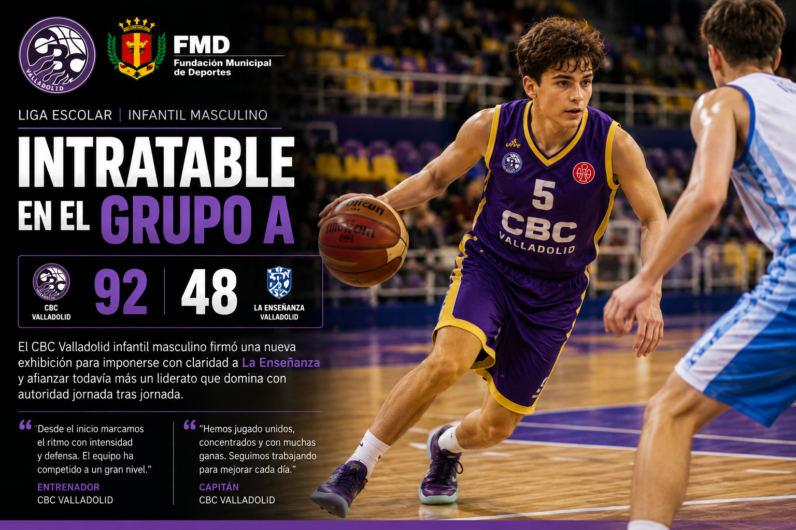
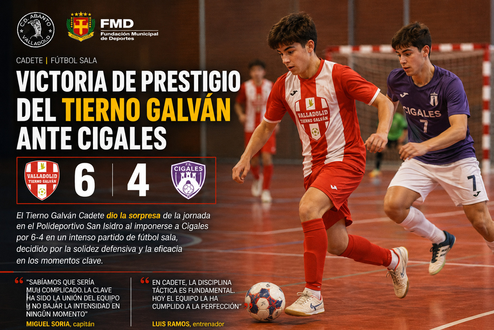
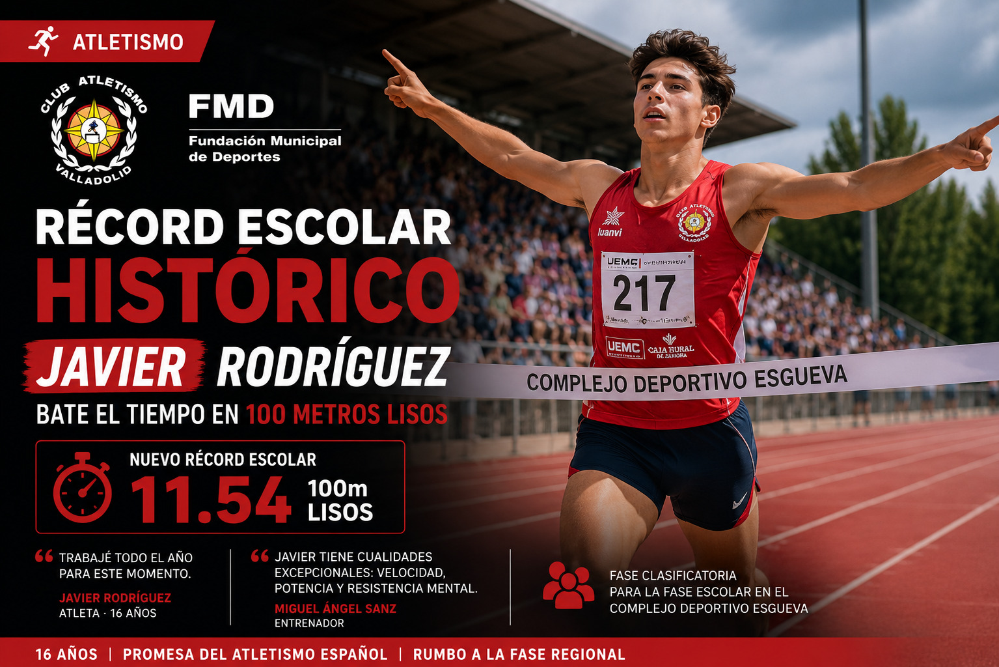
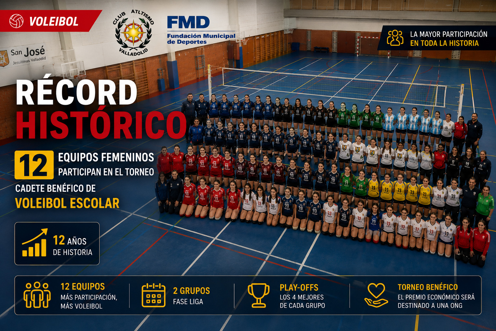

La FMD organiza la fase provincial de atletismo escolar este sábado en el Estadio José Zorrilla · 14 centros participantes
¿Qué es ValladeporteEscolar? Una plataforma digital creada para dar visibilidad al deporte base escolar en Valladolid, cubriendo noticias, resultados y eventos que los medios tradicionales no recogen. Un espacio para deportistas, familias, entrenadores y centros educativos.
El equipo benjamín San José derrotó de forma contundente al Pilar por 60-43, en esta jornada que abría la liga escolar. Desde el inicio, los locales impusieron su ritmo acelerado con un baloncesto fluido y ejecuciones precisas. Los anfitriones cerraron con sólidas estadísticas: 44% de acierto en triples y apenas 12 pérdidas de balón.
Últimas noticias




Calendario de eventos · Ver calendarios completos →